Warning: Using `size` aesthetic for lines was deprecated in ggplot2 3.4.0.
ℹ Please use `linewidth` instead.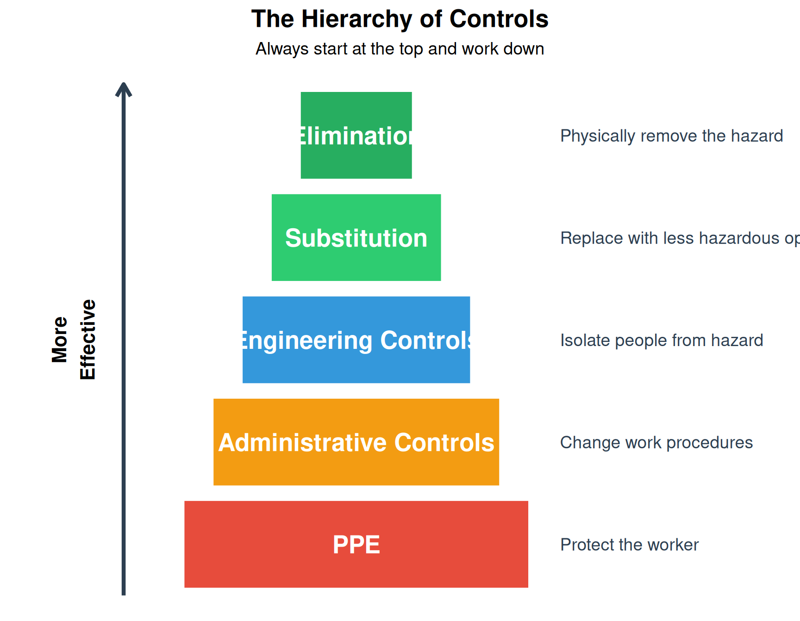
By the end of this chapter, you will be able to:
“Safety isn’t expensive, it’s priceless.” — Anonymous
In process engineering, safety is not merely a feature added at the end of a project; it is a fundamental design constraint. Before deploying safety devices, the engineer must apply the Hierarchy of Controls — a systematic approach to eliminating or reducing workplace hazards.
Warning: Using `size` aesthetic for lines was deprecated in ggplot2 3.4.0.
ℹ Please use `linewidth` instead.
| Priority | Control Level | Description | Example | Effectiveness |
|---|---|---|---|---|
| 1 | **Elimination** | Physically remove the hazard entirely | Eliminate pinch point by redesigning mechanism | Most Effective |
| 2 | **Substitution** | Replace with something less hazardous | Use lower voltage (24V DC instead of 120V AC) | Very Effective |
| 3 | **Engineering Controls** | Isolate people from the hazard through design | Install machine guarding, light curtains, interlocks | Effective |
| 4 | **Administrative Controls** | Change the way people work | Safety procedures, training, warning signs, lock-out/tag-out | Less Effective |
| 5 | **PPE** | Protect the worker with equipment | Safety glasses, gloves, steel-toe boots, hearing protection | Least Effective |
PPE (Personal Protective Equipment) is the least effective control because:
Key Principle: The more we can design out hazards through engineering controls, the less we depend on human behavior to keep people safe.
“If you have to post a warning sign, you’ve already failed at design.”
Physical barriers are the most intuitive form of protection. They create a “hard” separation between the operator and moving parts, ensuring that humans cannot enter the danger zone during machine operation.
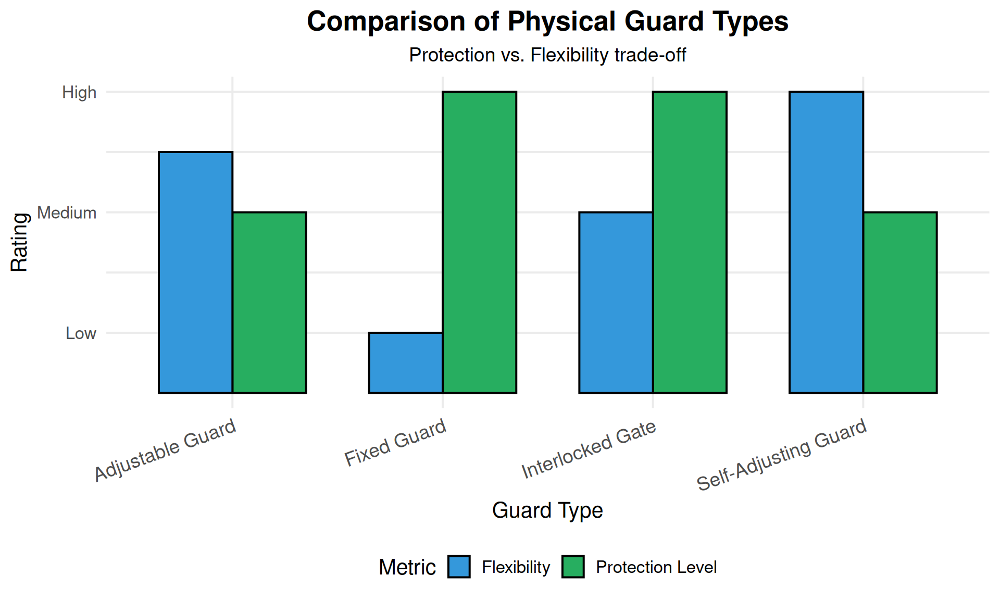
Fixed guards are permanent barriers that require tools to remove. They are the simplest and most reliable form of protection.
| Characteristic | Description |
|---|---|
| Construction | Wire mesh, polycarbonate sheets, or solid metal panels |
| Removal | Requires tools (screws, bolts) to remove |
| Best Application | Areas that need infrequent access for maintenance only |
| Advantages | Simple, reliable, low cost, no moving parts to fail |
| Disadvantages | Impedes visibility, slows maintenance, can be removed and not replaced |
Interlocked guards are access points equipped with sensors. When the guard is opened, the safety controller initiates a stop.
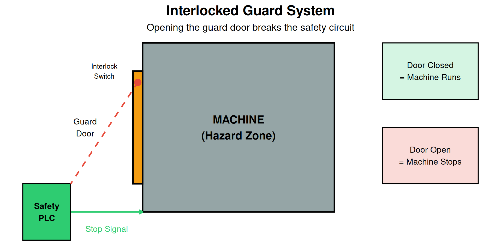
When an interlock is triggered, the machine must stop. The stop category determines how this happens:
| Category | Type | Method | Application | Example |
|---|---|---|---|---|
| **Category 0** | Uncontrolled Stop | Immediate removal of power to actuators | Emergency stops, dangerous machines | Press brake E-stop |
| **Category 1** | Controlled Stop | Controlled deceleration, then power removed | High-inertia machines, robots | Industrial robot guard open |
| **Category 2** | Controlled Stop | Controlled stop with power maintained | Process that cannot be interrupted abruptly | CNC spindle during tool change |
Trapped key systems use a mechanical sequence to ensure that a machine cannot be energized unless all access keys are returned to the control panel.
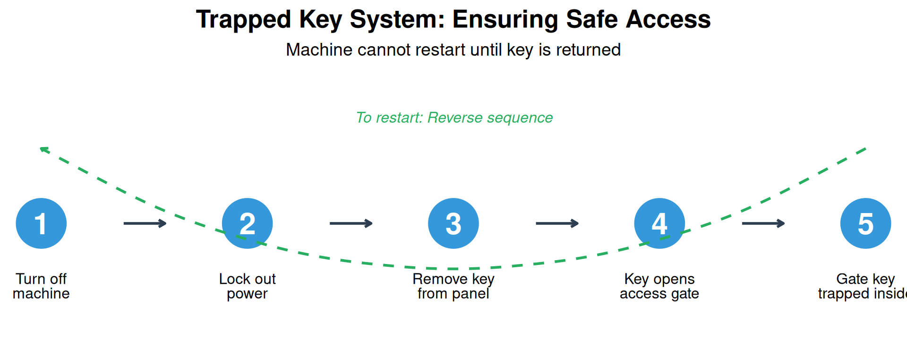
Incident: A maintenance worker was killed when a robot arm unexpectedly activated while he was inside a robotic cell.
What Happened: - The guard interlock had been bypassed with a “defeat device” (a magnet taped to fool the sensor) - Workers had bypassed the interlock because it slowed down troubleshooting - The bypass had been in place for months without management knowledge
Root Causes: 1. Interlock caused inconvenience during frequent troubleshooting 2. No monitoring system to detect bypasses 3. Culture that tolerated “workarounds”
Lessons Learned: - Design interlocks that don’t impede normal operations - Use tamper-evident or tamper-resistant devices - Regular safety audits to detect bypasses - Zero-tolerance policy for defeating safety devices
Never bypass a safety device, even temporarily.
Presence-sensing devices allow for a “fence-less” environment, improving visibility and ergonomics while maintaining high safety levels. They detect when a person enters a hazardous zone and trigger a machine stop.
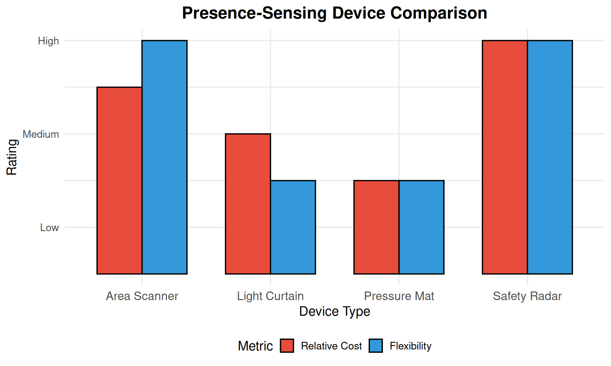
Light curtains use a transmitter and receiver to create an array of infrared beams. If any beam is broken, the safety circuit is interrupted.
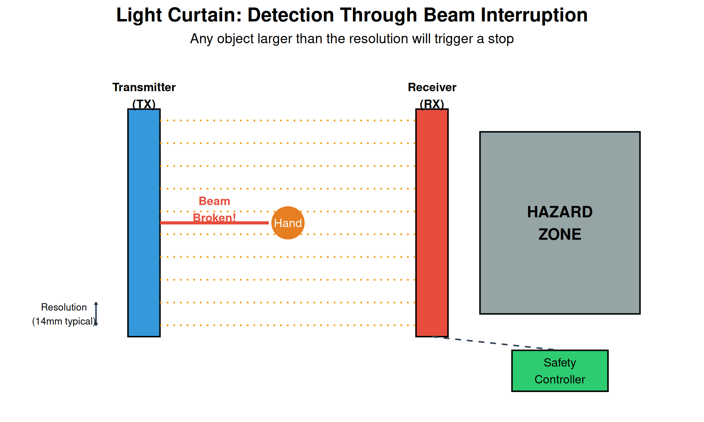
| Parameter | Finger Detection (14mm) | Hand Detection (30mm) | Body Detection (40mm+) |
|---|---|---|---|
| Resolution | 14mm beam spacing | 30mm beam spacing | 40mm+ beam spacing |
| Height | 150-1800mm | 300-1800mm | 900-2000mm |
| Range | 0.5-20m | 0.5-20m | 0.5-30m |
| Response Time | 5-15ms | 10-20ms | 15-30ms |
| Application | Point of operation guarding | Perimeter guarding | Area access detection |
Laser area scanners use LiDAR technology to monitor a 2D plane. They are highly flexible and allow for programmable zones.
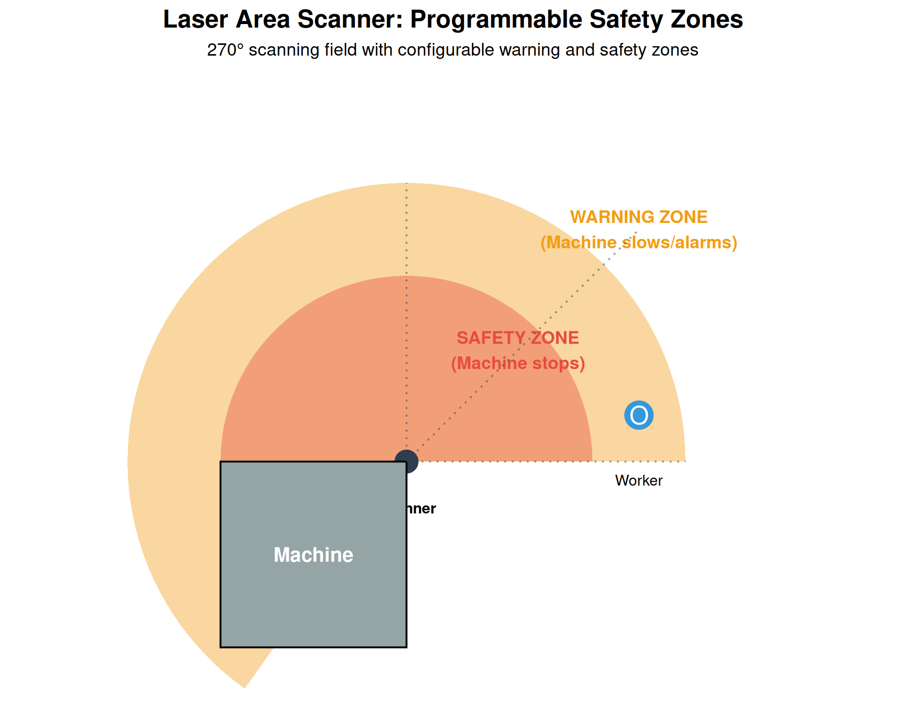
| Feature | Light Curtains | Area Scanners |
|---|---|---|
| Detection Type | Vertical/Linear Barrier | Horizontal/Area Coverage |
| Flexibility | Fixed installation | Programmable zones |
| Zone Configuration | Single detection plane | Multiple warning + safety zones |
| Cost | Generally lower ($1,000-5,000) | Higher ($3,000-10,000) |
| Best Use Case | Clear entry/exit points, press brakes | Large open floors, AGV paths, flexible cells |
| Environmental Limits | Dust/debris can cause false trips | More tolerant of dust, outdoor rated available |
Pressure-sensitive mats detect the presence of a person standing on them. They are used primarily in legacy systems or specific zones where optical sensors may be obscured.
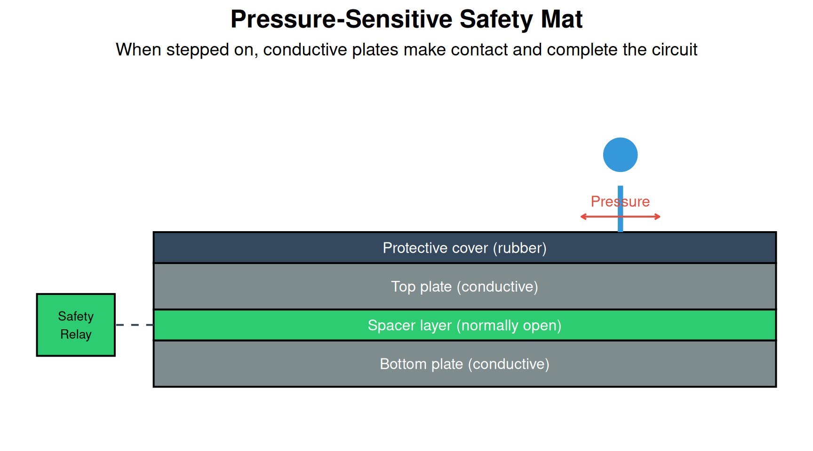
Use Pressure Mats When: - Environment has heavy dust, smoke, or steam (blinds optical sensors) - Detection area is well-defined and doesn’t change - Workers need to stand in a specific location - Budget is limited
Use Optical Sensors When: - Flexibility in zone configuration is needed - Environment is relatively clean - Detection area is large or needs to change - Higher integrity level is required
Hybrid Approach: Many modern systems use both — area scanners for perimeter protection and pressure mats for specific danger zones near the machine.
These devices ensure that the operator’s body—specifically their hands—is in a predetermined safe location before the machine can cycle.
Two-hand controls are common in pressing or stamping operations. To initiate a cycle, the operator must press two buttons simultaneously.
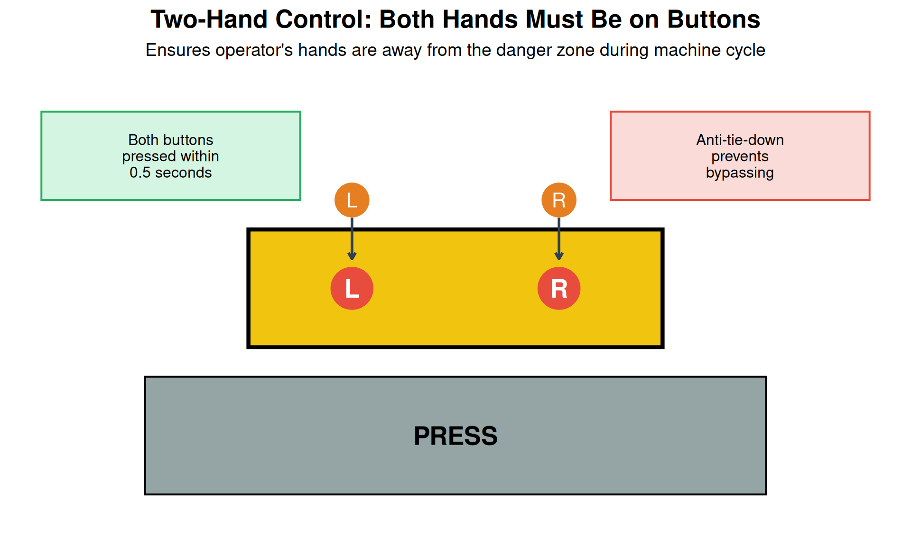
Anti-Tie-Down Requirement: Modern systems require both buttons to be pressed within 0.5 seconds of each other. This prevents operators from taping one button down to work with one hand.
| Requirement | Standard Value | Purpose |
|---|---|---|
| Synchronous activation | Within 0.5 seconds | Prevents one-hand operation |
| Continuous pressure | Must be held throughout cycle | Ensures hands stay on controls |
| Release before restart | Both must be released before next cycle | Prevents automatic cycling |
| Button spacing | Minimum 260mm (10 inches) apart | Cannot press both with one hand/arm |
| Guards around buttons | Prevent accidental activation | Prevents hip, elbow, or object activation |
Enable switches (also called deadman switches) are used during Teach Mode for robotics. The operator must hold a three-position trigger in the middle position.
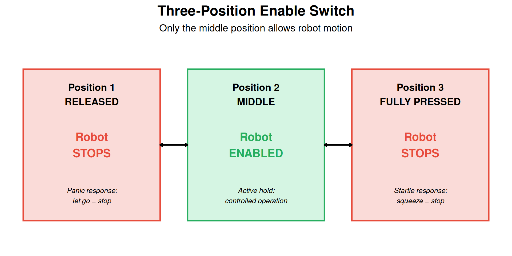
The three-position design accounts for two natural human reactions to danger:
Only a deliberate, controlled middle hold allows the robot to move. This is fundamental to safe teach pendant operation.
Collaborative robots (cobots) represent a shift from “separation” to “collaboration.” They rely on sophisticated internal sensors rather than external cages, allowing humans and robots to work in the same space.
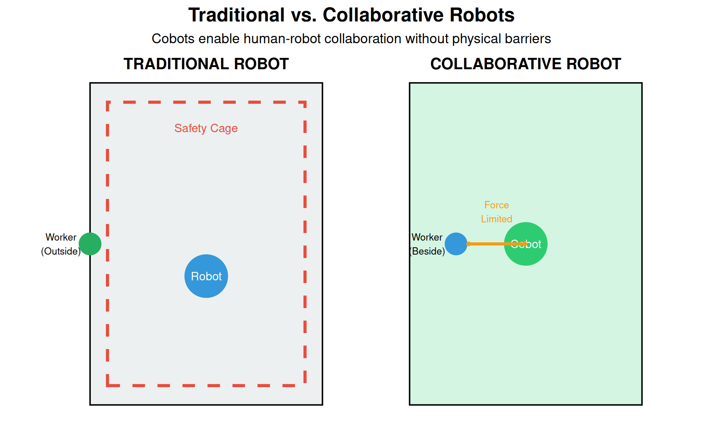
ISO 10218 and ISO/TS 15066 define four methods for safe collaborative operation:
| Method | How It Works | Sensors Used | Application |
|---|---|---|---|
| **Safety-Rated Monitored Stop** | Robot stops when human enters workspace, resumes when clear | Area scanners, light curtains | Large robot needing occasional access |
| **Hand Guiding** | Operator physically guides robot through motions | Force/torque sensors in joints | Teaching, positioning |
| **Speed and Separation Monitoring** | Robot slows or stops based on human proximity | Area scanners, radar, cameras | Shared workspace with varying proximity |
| **Power and Force Limiting** | Robot limits force/power to safe levels on contact | Joint torque sensors | Direct contact applications |
The most common cobot safety method is Power and Force Limiting. The robot detects a change in torque in its joints. If it bumps into a human, it stops before a regulated amount of force is exceeded.
| Body Region | Maximum Pressure (N/cm²) | Maximum Force (N) | Risk Level |
|---|---|---|---|
| Skull/Forehead | 130 | 130 | Critical |
| Face | 65 | 65 | Critical |
| Neck | 145 | 150 | Critical |
| Back/Shoulders | 210 | 210 | Moderate |
| Chest | 140 | 140 | Moderate |
| Abdomen | 110 | 110 | Moderate |
| Hand/Fingers | 300 | 140 | Lower |
Common Misconception: “Cobots are safe, so we don’t need to do a risk assessment.”
Reality: Cobots are potentially safe, but a risk assessment is always required.
Factors that can make a cobot unsafe:
Every collaborative application requires a documented risk assessment per ISO 12100.
A safety device cannot be placed arbitrarily. It must be far enough away that the machine comes to a complete halt before the human can reach the hazard.
The minimum safety distance \(S\) is calculated as:
\[S = (K \times T) + C\]
Where:
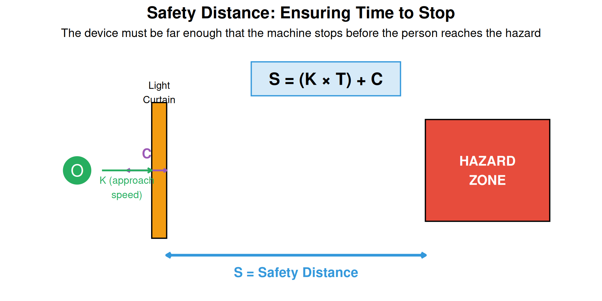
| Approach Type | K Value (mm/s) | When to Use |
|---|---|---|
| Hand/Arm Approach (fast) | 2000 | Close approach to point of operation |
| Hand/Arm Approach (normal) | 1600 | General approach to machines |
| Walking Approach | 1600 | Area access detection |
| Standing Reach | 0 (static) | Worker already in position |
The penetration depth depends on the resolution of the sensing device:
| Resolution (mm) | C Value (mm) | Detection Type |
|---|---|---|
| ≤14 | 0 | Finger detection |
| >14 to ≤20 | 80 | Finger/Hand |
| >20 to ≤30 | 130 | Hand detection |
| >30 to ≤40 | 240 | Hand/Arm |
| >40 | 850 | Body detection |
Live cell — try different approach speed, response time, or resolution values.
Given: - Light curtain resolution: 30mm (hand detection) - Light curtain response time: 15ms - Machine stopping time: 200ms - Application: Operator hand approach
Calculate the minimum safety distance.
Solution:
K = 1600 mm/s (normal hand approach)
T = 0.015 + 0.200 = 0.215 seconds
C = 130 mm (for 30mm resolution)
S = (K × T) + C
S = (1600 × 0.215) + 130
S = 344 + 130
S = 474 mm (approximately 18.7 inches)The light curtain must be installed at least 474mm from the nearest hazard point.
The Emergency Stop is the “last resort” — it is not a safety device but a complementary protective measure. It must be available to stop the machine when all other measures have failed.
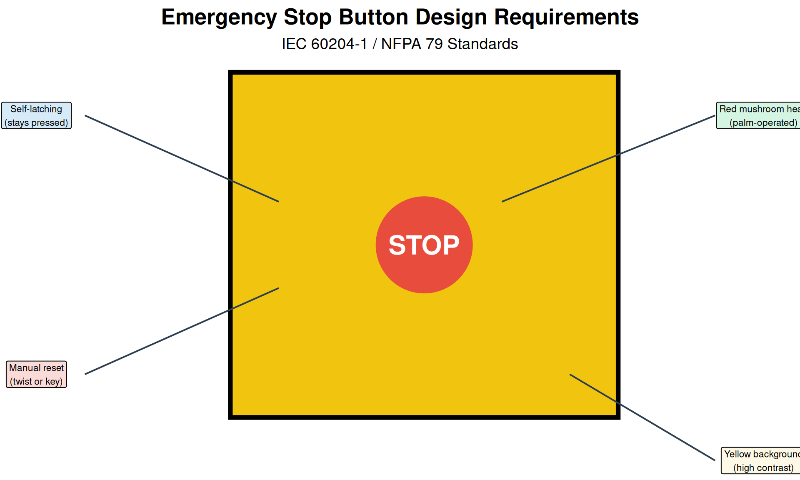
| Requirement | Standard |
|---|---|
| Color | Red (RAL 3000 or equivalent) |
| Shape | Mushroom head (palm or fist operated) |
| Background | Yellow (high contrast) |
| Operation | Self-latching (stays activated when pressed) |
| Reset | Manual reset required (twist, pull, or key) |
| Accessibility | Within easy reach of all operators |
| Wiring | Normally closed contacts (fail-safe) |
| Function | Category 0 or Category 1 stop |
For long conveyors or machines where an operator cannot quickly reach a fixed button, pull cords provide continuous E-Stop coverage.
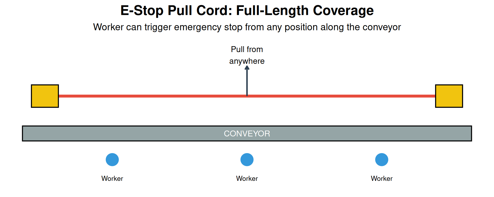
Mistake 1: Using E-Stop for normal stopping - E-Stops are for emergencies only - Normal stops should use a separate control - Frequent E-Stop use causes wear and desensitizes operators
Mistake 2: E-Stop that doesn’t stop everything - All hazardous motion must stop - Auxiliary equipment (conveyors, feeders) often forgotten - Review entire system, not just the primary machine
Mistake 3: Automatic restart after E-Stop reset - Machine must NOT automatically restart when E-Stop is released - Separate “Start” action required - This prevents unexpected motion after reset
Mistake 4: Hidden or blocked E-Stops - E-Stops must be visible and accessible - Guard placement sometimes blocks access - Regular audits needed to ensure accessibility
Modern safety systems must meet specific performance levels to ensure reliability. Two main frameworks exist:
| SIL Level | PFH Range | Approximate Meaning | Typical Application |
|---|---|---|---|
| SIL 1 | ≥10⁻⁶ to <10⁻⁵ | Dangerous failure less than once per 11 years | Low-risk tasks |
| SIL 2 | ≥10⁻⁷ to <10⁻⁶ | Dangerous failure less than once per 114 years | Most industrial machinery |
| SIL 3 | ≥10⁻⁸ to <10⁻⁷ | Dangerous failure less than once per 1,140 years | High-risk processes |
| Performance Level | PFH Range | Risk Reduction | Equivalent SIL |
|---|---|---|---|
| PL a | ≥10⁻⁵ to <10⁻⁴ | Lowest | < SIL 1 |
| PL b | ≥3×10⁻⁶ to <10⁻⁵ | Low | SIL 1 |
| PL c | ≥10⁻⁶ to <3×10⁻⁶ | Medium | SIL 1 |
| PL d | ≥10⁻⁷ to <10⁻⁶ | High | SIL 2 |
| PL e | ≥10⁻⁸ to <10⁻⁷ | Highest | SIL 3 |
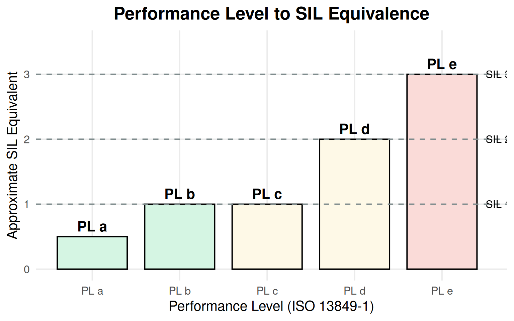
Use ISO 13849-1 (Performance Levels) when: - Designing safety functions for standard machinery - Using off-the-shelf safety components - Simpler systems with well-defined safety functions
Use IEC 62061 (SIL) when: - Complex programmable systems (safety PLCs) - Process industries - When customer or regulation specifies SIL
Note: Many modern systems use both standards, as they are harmonized and can be used together. The choice often depends on industry practice and customer requirements.
Before selecting any safety device, a risk assessment must be performed. This is required by ISO 12100.
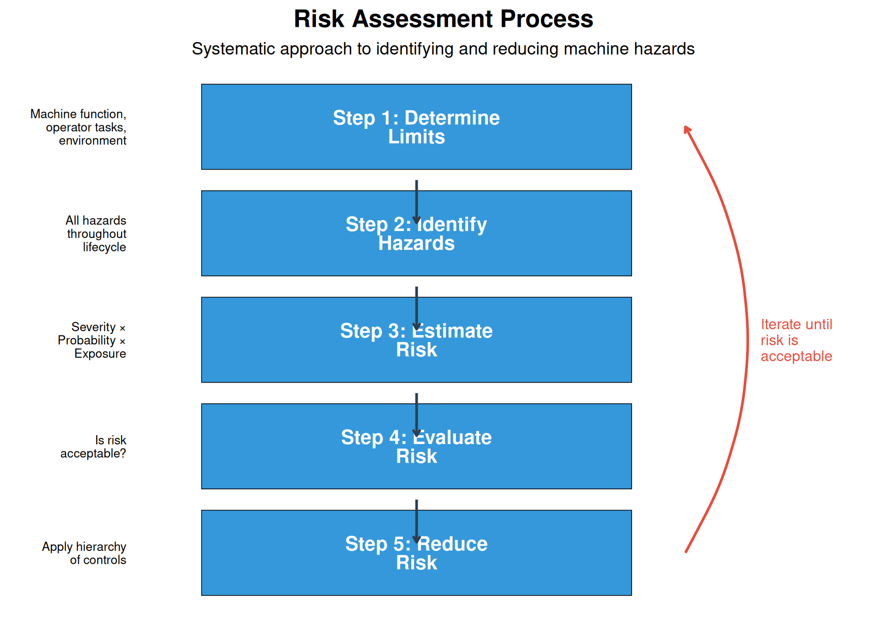
Risk is typically estimated using three factors:
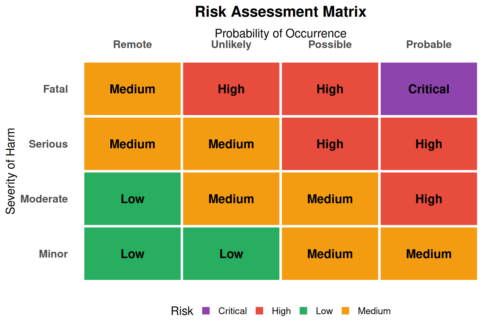
| Topic | Key Points | Critical Remember |
|---|---|---|
| **Hierarchy of Controls** | Elimination > Substitution > Engineering > Administrative > PPE | Always start at the top of the hierarchy |
| **Physical Guarding** | Fixed guards, interlocked gates, trapped key systems | Stop category (0, 1, 2) determines how machine stops |
| **Presence Sensing** | Light curtains, area scanners, pressure mats | Resolution determines detection capability |
| **Control-Actuated Devices** | Two-hand controls, enable/deadman switches | Anti-tie-down prevents one-hand bypass |
| **Collaborative Robots** | PFL, speed/separation monitoring, hand guiding | Risk assessment required for every cobot application |
| **Safety Distance** | S = (K × T) + C formula for device placement | Include device response AND machine stop time |
| **E-Stop Systems** | Red mushroom on yellow, self-latching, manual reset | E-Stop is last resort, not normal operation |
| **Functional Safety** | SIL (IEC 62061) and PL (ISO 13849-1) standards | Required performance level from risk assessment |
The five levels are (from most to least effective):
PPE is least effective because: - The hazard still exists - It depends on human compliance - Equipment can fail or be worn incorrectly - It’s the last line of defense
Given: - K = 2000 mm/s (hand approach, use higher value for safety) - T = 0.012 + 0.180 = 0.192 seconds - C = 0 mm (14mm resolution)
Calculation: \[S = (K \times T) + C\] \[S = (2000 \times 0.192) + 0\] \[S = 384 \text{ mm}\]
The light curtain must be installed at least 384mm (approximately 15 inches) from the hazard.
The three-position design accounts for two natural human reactions to danger:
Position 1 (Released): - When frightened, people often release what they’re holding (panic response) - Robot stops immediately
Position 3 (Fully Pressed): - When startled, people often grip tighter (startle response) - Robot stops immediately
Position 2 (Middle): - Only a deliberate, controlled hold allows operation - Requires conscious effort to maintain - This ensures the operator is alert and in control
Physical Requirements: - Color: Red - Shape: Mushroom head (palm or fist operated) - Background: Yellow (high contrast)
Functional Requirements: - Self-latching: Stays activated when pressed - Manual reset: Requires deliberate action to release - Accessibility: Within easy reach of all operators - Wiring: Normally closed contacts (fail-safe) - Function: Category 0 or Category 1 stop - No automatic restart: Separate start action required after reset